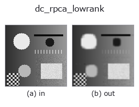

decomposition op• 資料種類:image → image
• 呼叫:fullseye.apply(img, "dc_rpca_lowrank", a=0.5, b=0.5)(2-D 的模型是一張圖 + 兩個純量旋鈕 a,b∈[0,1])

*圖為在 128×128 合成輸入上實際執行的輸出。左為輸入，右為輸出。點雲以俯視散點顯示(亮度 = z)，一維序列為折線，體資料為沿 z 的最大值投影，影片為中間影格，複數影像為振幅；無法成像的回傳值直接顯示數值。*
掃描旋鈕 a(0.1 / 0.5 / 0.9，另一旋鈕取預設):
▸ dc_rpca_lowrank: 旋鈕 a 掃描 (文件網站)
*旋鈕 b 不改變輸出(實測: 0.1 / 0.5 / 0.9 相同)。*
換別的影像(合成場景 / 照片 / 硬幣。上排為輸入，下排為對應輸出。旋鈕取預設):
▸ dc_rpca_lowrank: 其他輸入影像 (文件網站)
*第 4 欄是彩色 (H,W,3) 輸入。此運算子能正確處理顏色而不跨通道(不把顏色通道當作第三個空間軸摺積)。*
穩健 PCA（Robust-PCA）的低秩（背景）部分。
以 inexact ALM（Lin/Chen/Ma 2010）求解把影像矩陣 M 分解為 M = L + S（低秩 L + 稀疏 S）的 Principal Component Pursuit，並回傳 L。稀疏項的權重為 λ = (0.5 + 1.5*a) / sqrt(max(m, n))（m, n 為分解時的矩陣尺寸），a 越大 S 越稀疏，相應地留在 L 中的成分（秩）增多。a=0 時 λ 小，大部分變動被 S 吸收，L 變得平淡無奇。b 未使用。最多迭代 60 次，收斂判定為 ||M - L - S||_F <= 1e-7 * ||M||_F。
長邊超過 64 的影像先縮小到 64 再分解，只把 L 以線性內插恢復到原尺寸（因為低秩部分經得起縮小）。輸入整理為 [0,1] 的 2 維 float64 （3 維取通道平均），回傳值也同形、截斷到 [0,1]。全零影像原樣回傳輸入。BLAS 的執行緒數只在分解期間以 fsthreads 限制（小矩陣的 SVD 執行緒越多越慢）。例外時 fail-soft，回傳輸入的截斷版本，並記錄到台帳。
這是把「跨列或行重複的結構」（條紋、漸層、週期圖樣）視為背景的分解，因此即使是單張 2 維影像，也適合從織物、片材、顯示器像素等週期背景中分離孤立瑕疵。對自然影像這類非週期背景，L 只是單純的低秩近似，不會成為有意義的背景。與之成對的瑕疵側是 dc_rpca_sparse（L + (S - 0.5) == 輸入）。若想以保邊平滑擷取結構，用 dc_structure_texture。
• gallery2d_texture_freq 族使用指南
• blas_threads_and_memory — 矩陣分解為何慢 —— BLAS 執行緒、快取、記憶體配置
• 範例資料目錄(下載 URL / 授權) —— 2-D 用 skimage.data(BSD/公有領域)加合成圖,3-D 給出真實資料源(Stanford/PDS 等)的下載 URL。
• 運算子來歷與參考文獻 —— 該運算子族所依據的研究/方法出處。
• 演算法的正典(作者、年份)與用途見上面的族使用指南。
下面的程式已確認可以執行(與圖相同的輸入)。在 Studio 說明中，此區塊會變成按鈕，可當場載入並執行。
dc_rpca_lowrank 0.50 0.50
• blas_thread_budget — py -3.11 examples/blas_thread_budget.py
• gallery2d_texture_freq — py -3.11 examples/gallery2d_texture_freq.py
image 作為輸入)identity · gaussian · mean_box · bilateral · unsharp · median · min_filter · max_filter
decomposition)dc_structure_texture · dc_texture_residual · dc_rpca_sparse · dc_retinex · dc_local_contrast_norm · dc_homomorphic
*Provenance: ops.py — 2D 運算子登記表。本條目由 tools/opdocs.py md 自動產生(請勿手動編輯)。*
© 2026 Kazufumi Furuse — Fullseye operator documentation. Licensed under Apache-2.0.